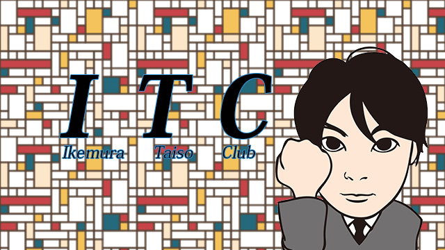

最近の悩み
去年の秋に、ナマった体を立て直そうと筋トレを始めました。
それなりに続けましたが、冬には寒くて億劫になり断念。
それではイカン！
ということでこの夏に一念発起し、本気でトレーニングを再開。
２ヶ月程度で筋力自体は若かりし頃に近くなるまで復活したと思います。
しかし、大きな悩みが…。
それは‘脂肪が減らない’ことです。
恐らく歳をとったので基礎代謝量がなかなか上がらないんでしょうね。
せっかく筋肉をつけても、つけただけ太って見えるという現状。
まぁ原因は明白です。
有酸素運動をしていないこともそうですが、なにより「食事」です。
食べたいものを食べたいだけ食べていたのでは痩せるわけがありませんね。
でも、とにかく食欲がすごいんですよ（泣）。
しかもスイーツが大好きで、基本的に毎日コンビニで買って食べているという。
特に最近○ァミリーマートで発売されたブリュレ系のチーズケーキが本当に美味しくてやめられません。。。
困ったものです。
食欲の秋でゆさぶられ、極寒の冬でまたトレーニングを断念しないよう、どうにかして今年は乗り切りたい…。
「強い意志さえあれば継続できるはず」そう人は言うでしょう。
しかしそれはあくまで理想であり、現実には‘継続すること’そのものが目的となってしまい、トレーニング内容に妥協が入る場合もある。
本当に美しい肉体を作り上げたいのなら、その内容こそが大事なのですよ。
濃い内容で、かつ継続的に、どんなに忙しいスケジュール、気候の変動でも意に介さずやり遂げるにはどうしたらよいか。
あるんですよ、これが。
なんと初の同志が
その方法は目標を同じくする「同志」と共に励まし合いながら歩むこと。
これは大事ですよ。
「今日はちょっと疲れてるから明日でいいかな…」そんなことを考えているとき、
「よし、今日の仕事後にもやりましょうか」というような呼びかけがあったら、やらざるを得ないですよね。
つまり安易に逃げられない環境という‘保険’をかけるわけです。
しかも私が言い出しっぺになることで、ますますその要素が強まる。
ということで、立ち上げました、ITC（池村体操クラブ）なるものを。
最初に考えていた内容は、筋トレ・イケロビクス（有酸素運動）・アクロバット（器械体操的要素）でしたが、とりあえず今は筋トレしかしていません。
同志を常時募集していますので、一緒に鍛えたい人はご連絡下さい。
という話を職場のいろんなところでしているのですが「まあマネージャーなら」とか、社交辞令の返事しかもらえない日々。
ところが今月、やっと同志が現れました。
2015年3月25日ブログ（Anniversary ～３０周年記念大盛り上がり！～）の金屏風前で写っている写真の左端の男Ｓ教室長です。
彼は１年半前までは運動不足からかなりの太目な体型になっていました。
しかし、それではアカンと自転車通勤で少しでも自分を変えたいという意志のもと、かなりの減量に成功した実績の持ち主（アメブロ2014/06/25の『日記～継続は力なり～』参照）。
彼が深夜の会議後、ふらっとウチに寄ったのですが、その時に私から、
「俺が開発したオリジナルの腹筋引き締め法をやってみないか」と持ちかけたところ、まんまとやってくれたので、そのまま大胸筋や三角筋のエクササイズに進み、気がつけば彼は心地よい疲労感と充実感を感じていたようでした。
そして「せっかく今日やったんだから無駄にしたくない」
と言い出し、ITC会員になり今後頻繁にウチに来ることを決意。
作戦成功となりました。
脂肪は減らないものの、私自身の体にも少し目に見える変化が表れてきたので、ちょくちょく活動の報告をしていきたいと思います。